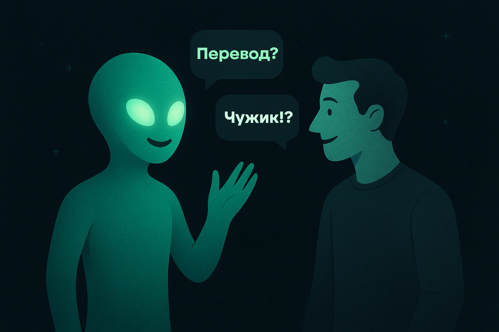

Перевод со скоростью света
переводчужик — это не просто переводчик, а инопланетянин, знающий все языки галактики! Выделите текст, нажмите Ctrl+Q — и наш чужик тут же переведёт вам всё, как родное.
Перевод одним кликом
Живёт в системном трее и всегда готов помочь — никаких лишних окон и копипаста.
Искусственный интеллект
Использует лучшие движки: Google, Yandex, ChatGPT или ваш собственный сервер.
Автоопределение языка
Умный алгоритм мгновенно понимает язык текста и подстраивает перевод.
Полная кастомизация
Настройте горячие клавиши, размеры окна, тему и даже свой сервер переводов.
Как это работает
переводчужик поднимает легковесный веб-интерфейс внутри вашего браузера — никаких тяжелых установок. Вся магия происходит локально или на выбранном вами облачном сервисе.
Готовы начать?
Скачать для WindowsВерсии для macOS и Linux — скоро.